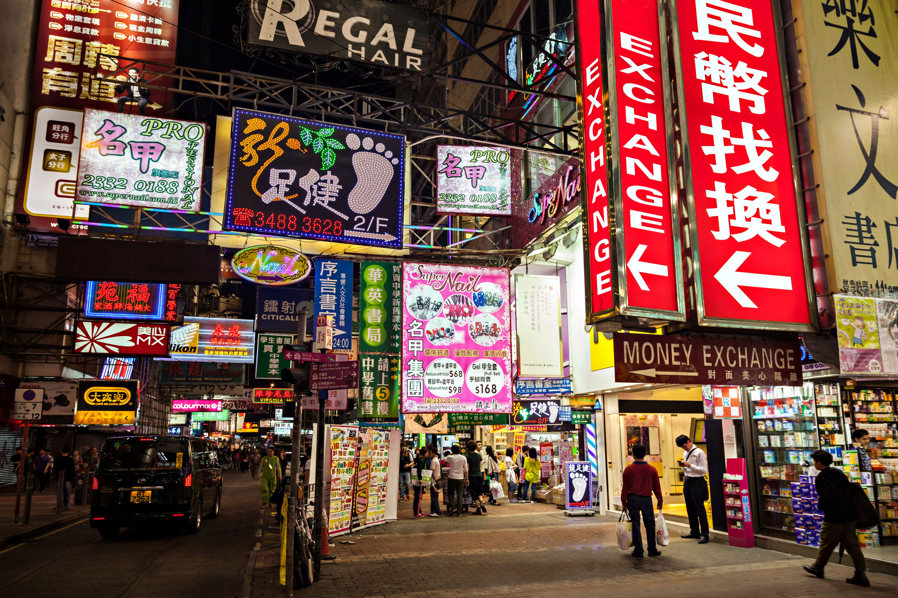

홍콩 · 홍콩섬
옛 정취가 남은 골목, 셩완
셩완은 홍콩섬 서쪽 끝에 위치한 지역으로, 오래된 한약방과 건어물 상점, 골동품 거리가 옛 홍콩의 정취를 간직하고 있습니다. 현대적 센트럴과 맞닿아 있으면서도 전혀 다른 시간의 결을 보여줍니다.
가파른 계단 골목과 낡은 간판이 영화 속 감성을 자아내, 사진 명소이자 영화 여행 코스로 사랑받습니다.
이 지역에서 촬영된 영화
화양연화 (2000)
셩완 일대의 좁은 계단 골목과 옛 건물이 두 주인공의 절제된 감정을 담는 배경으로 활용되었습니다.
2046 (2004)
화양연화의 후속작으로, 옛 홍콩의 정서가 짙은 셩완의 거리 풍경이 곳곳에 묻어납니다.
근처 명소
할리우드 로드
골동품과 갤러리가 모인 거리. 옛 홍콩의 분위기를 가장 잘 느낄 수 있는 곳.
만모 사원 (文武廟)
향 연기 가득한 전통 사원. 영화 속에 자주 등장하는 셩완의 상징.
PMQ (원경원)
옛 기숙사를 개조한 디자인·예술 공간. 젊은 감각의 상점이 가득합니다.
주변 맛집
한약차
공화당 (公利)
전통 사탕수수 주스와 거북이 젤리로 유명한 노포.
로컬
사인 (新興食家)
셩완의 오래된 차찬텡. 현지 아침 식사 명소.
커피
셩완 로스터리
옛 거리 속 감성 카페. 골목 산책 중 쉬어가기 좋습니다.